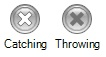

This event indicates that an embedded sub-process was canceled.

There are two types of Cancel Intermediate Events: throwing and catching.
Only when it is a catch event, it can be attached to an embedded sub-process, if the sub-process is canceled, the flow can continue down the path indicated by this event.
While if it is a throw event, its behavior will be similar to the Cancel End Event, but it will not end the sub-process.
Objects: Business Process Diagram
| Backlinks | |
| BPD Intermediate Events | Toc:GeneXus BPM Suite |